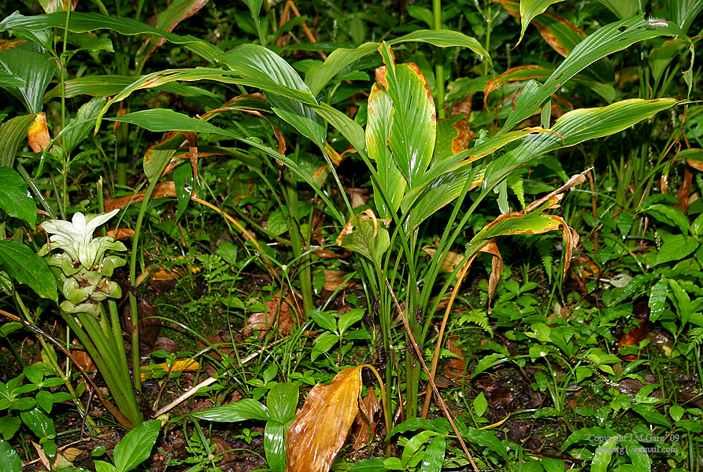

Curcuma longa
| common name | turmeric | |
| en español | cúrcuma, turmérico | |
| name in Āyurveda | haridrā (हरेणु) | |
| name in TCM | jiáng huāng (姜黄) | |
| plant family | Zingiberaceae (ginger) | |
| parts used | fresh and dried rhizome |

from Wikimedia Commons by J.M.Garg - Eigenes Werk, CC BY 3.0
observations/description
dried root
- small pebble-sized pieces, deep saffron orange hue
- lovely, depp pungent aroma of turmeric
"Turmeric", Wikipedia
- highly branched, yellow to orange, cylindrical, aromatic rhizomes
- leaves are alternate and arranged in two rows; a false stem is formed from the leaf sheaths
- oblong to elliptical shape, narrowing at the tip
- inflorescence stem forms at the end of the false stem
- three bright-yellow petals are fused into a corolla tube
distribution/conservation status
"Turmeric", Wikipedia
- native to the Indian subcontinent and Southeast Asia
- was spread with the Lapita people of the Austronesian expansion into Oceania
- populations in Micronesia, Island Melanesia, and Polynesia (including as far as Hawaii and Easter Island) used turmeric widely for both food and dye before European contact
primary actions
The Yoga of Herbs, p. 149-50
- digestive stimulant, carminative, alterative, vulnerary, antibacterial
The Modern Herbal Dispensatory, p. 315
- anti-inflammatory, antimutagenic, antioxidant, cholagogue, hepatoprotective, digestive tonic
system affinities
digestive, integumentary, lymphatic
primary uses
The Yoga of Herbs, p. 149-50
- indicated for indigestion
- for respiratory issues like cough, pharyngitis
- external/vulnerary uses for skin disorders, wounds, bruises
- with honey for sprains, strains, bruises, or itch
- can be taken internally as a milk decoction to support skin as well
- supports the circulatory system, used for poor circulation, anemia, diabetes
- anti-inflammatory: used for arthritis
- indicated for amenorrhea
- excellent natural antibiotic, but strengthens digestion and improves gut flora
- good antibiotic for chronically weak/ill individuals
- warms and purifies the blood, stimulates the formation of new blood tissue
- helps stretch ligaments; good for haṭhayoga
- promotes proper metabolism, corrects both excesses and deficiencies
- aids in digestion of protein
The New Age Herbalist, p. 128
- used in TCM to treat shoulder pain, menstrual cramps, and colic
The Modern Herbal Dispensatory, p. 315
- stimulates digestion and aids assimilation
- good liver and gall bladder remedy
- aids liver function
- helps dissolve and prevent gallstones
- reduces inflammation and eases chronic pain; useful for treating arthritis and other chronic inflammatory disorders
- crosses the blood-brain barrier
- effective for inflammation-induced depression
energetics
The Yoga of Herbs, p. 149-50
- reduces kapha; increase pitta, vāta (in excess)
- bitter/astringent/pungent taste - pungent post-digestive effect
- heating
The Modern Herbal Dispensatory, p. 315
- warming, slightly drying
pharmacology
The New Age Herbalist, p. 128
- volatile oil (5-7%), terpene, curcumen, starch (24%), albumen (30%), curcumin, potassium, vitamin C
- coloring chiefly due to curcumin
contraindications/pharmaceutical interactions/warnings
The Yoga of Herbs, p. 149-50
- contraindicated for acute jaundice and hepatitis, high pitta, and pregnancy
The Modern Herbal Dispensatory, p. 315
- overuse in hot/dry individuals can cause nervous agitation
preparations
The Modern Herbal Dispensatory, p. 315
- standard decoction
- dried root, 30 g: 1 L, covered
- with water or coconut milk
- tincture
- fresh root juice decocted to 50% of original volume
- preserve with 25% alcohol (of final volume)
- powder
Herbal Materia Medica, p. 15
- tincture
- (dried) root, 1:5, 50% alcohol
The Yoga of Herbs, p. 78-80, 149-50
- hot infusion
- fresh/dried root, 1:4 (strong)
- fresh/dried root, 1:8 (moderate)
- cold infusion
- fresh/dried root, 1:4 (strong)
- fresh/dried root, 1:8 (moderate)
- decoction
- fresh/dried root, 1:16, reduce to 1/4 original amount
- milk decoction
- fresh/dried root, 1:8:32, reduce to 1/5 original amount
- powder
dosage
The Modern Herbal Dispensatory, p. 315
- standard decoction: 2-4 oz, 3/day
- tincture: 1-5 mL, 3/day
- powder: 1000-3000 mg, 3/day
Herbal Materia Medica, p. 15
- tincture: 10-30 drops
The Yoga of Herbs, p. 92, 149-50
- hot infusion: 2 oz, 3/day
- cold infusion: 2 oz, 3/day
- decoction: 2 oz, 3/day
- milk decoction: 2 oz, 3/day
- powder: 250-1000 mg, 3/day
extra information
The Yoga of Herbs, p. 149-50
- name in Sanskrit refers to 'yellow'
- gives the energy of the divine mother, grants prosperity
- cleanses the cakras and channels of the subtle body (nāḍīśōdhana)
The New Age Herbalist, p. 128
- used to dye the robes of Buddhist monks
personal experiences/simples
decoction (8 g: 16 oz, 20 minutes), dried root
- bright orangey yellow color, chalky/opaque
- gentle, nourishing aroma of turmeric, more pleasant than that of the dried root itself
- suprisingly not much flavor
- liquid feels thicker than water, tastes and feels very nutritive
- sweeter and more flavorsome as it cools
witchcraft
The Witch's Encyclopedia of Magical Plants, p. 305-6
- reputedly an aphrodisiac, used in Hindu wedding ceremonies
- used in women's life-cycle ritual at puberty
- burned to scare away ghosts
- worn as a bracelet or powdered root mixed with water and dabbed on cheeks to ward off evil spirits
- elements: earth, fire
- astrological influence: mars, mercury, sun
recipes
sources
Easely, Thomas and Steven Horne. The Modern Herbal Dispensatory (2016)
Frawley, David and Vasant Lad. The Yoga of Herbs: An Ayurvedic Guide to Herbal Medicine (1986)
Goldberg Blackthorn, Samantha. Ace of Cups Herbal Medicine and Botanical Magic Herbal School (2024)
Kynes, Sandra. The Witch's Encyclopedia of Magical Plants (2024)
Mabey, Richard et al. The New Age Herbalist (1988)
Moore, Michael. Herbal Materia Medica, Fifth Edition (1995)
"Turmeric" on Wikipedia. Retrieved 7 May 2025.